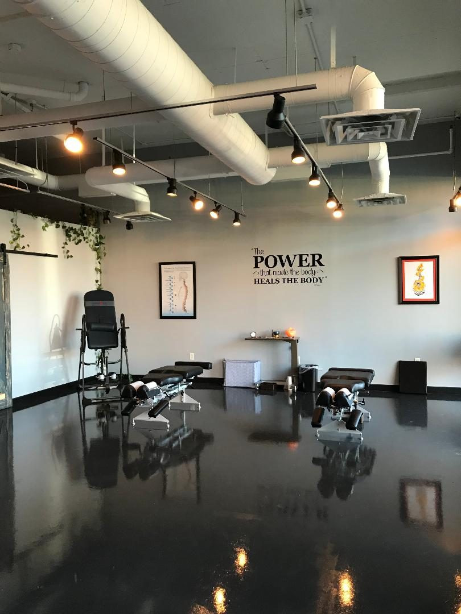
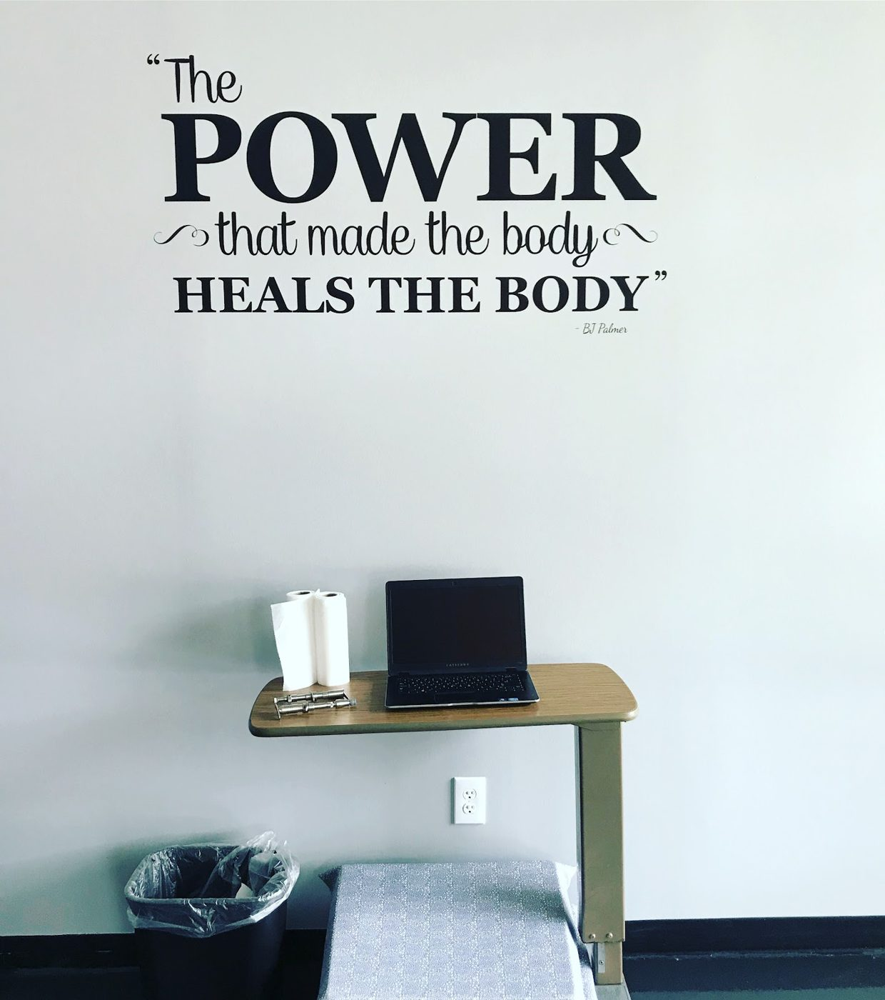
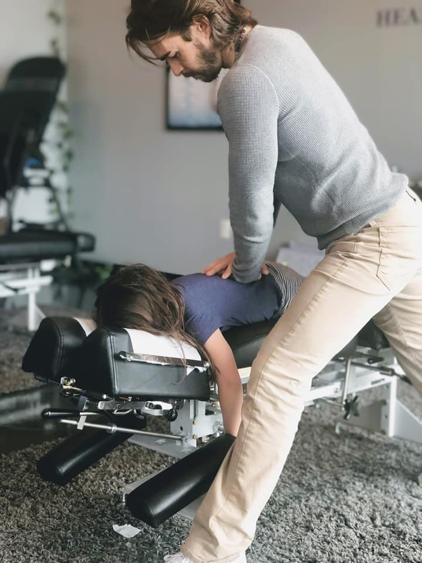
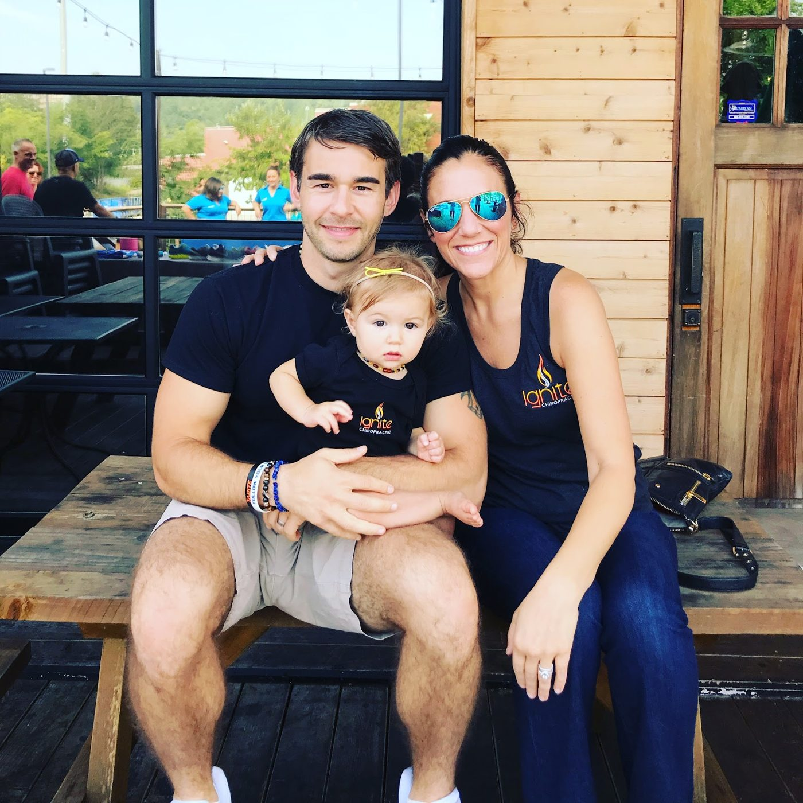

Ignite Chiropractic, Chattanooga
Care that looks for the cause, not the symptom.
Ignite Chiropractic is a healing center in Chattanooga. The practice works with the nervous system, which it describes as the body's master control system, and looks for the underlying cause of a problem instead of covering the symptom.


A different way to think about health
The practice follows a vitalistic model. Every person is born with an innate intelligence that works through the nervous system, and chiropractic care at Ignite focuses on removing interference in that system through specific adjustments, so the body can express itself at its best.
The practice also runs workshops and classes for the people it serves, on balancing body, mind, and soul. If you are unsure whether chiropractic care is right for you, the practice offers a free 15 minute consultation with Dr. Jeff.
What Ignite offers
Four areas of care, all from the Chattanooga practice.
Pain Relief
Care that looks for the underlying cause of discomfort instead of covering the symptom. The full list of reasons people visit is on the Services page.
Prenatal Care
Care for mothers whose bodies are changing through pregnancy, including the Webster technique to balance the pelvis.
Pediatric Care
Gentle adjustments for babies and children, from a doctor specifically trained to work with pediatric patients.
Wellness Care
Care for people who are not in pain and want chiropractic care as part of their normal health routine.

Care specific to the person
An adjustment at Ignite is specific to the person on the table. A pediatric adjustment is gentle, and it is not uncommon for a baby to fall asleep during one. As children grow, the type of adjustment changes with them.
Care plans are built for the person, after a few visits to see how the body responds. The practice does not hand out the same long-term plan to everyone.
Meet Dr. Jeff
Dr. Jeff LaFlamme leads the practice. He came to chiropractic through his own experience: after years of feeling disconnected from his own health, he found a chiropractor, and the change led him to open Ignite Chiropractic in Chattanooga.
Emilee LaFlamme manages the practice, and the two run it together.

Your first visit
The initial visit takes 45 minutes to 1 hour.
Health history consultation
Talk about what brought you in, your goals, and whether Ignite is the right place for you.
Neuro-spinal analysis
A gentle hands-on reading of how your spine moves, to understand the health of your spine.
Adjustment
A specific chiropractic adjustment to start the healing process.
Second visit
Go over a personalized plan of action for your care.